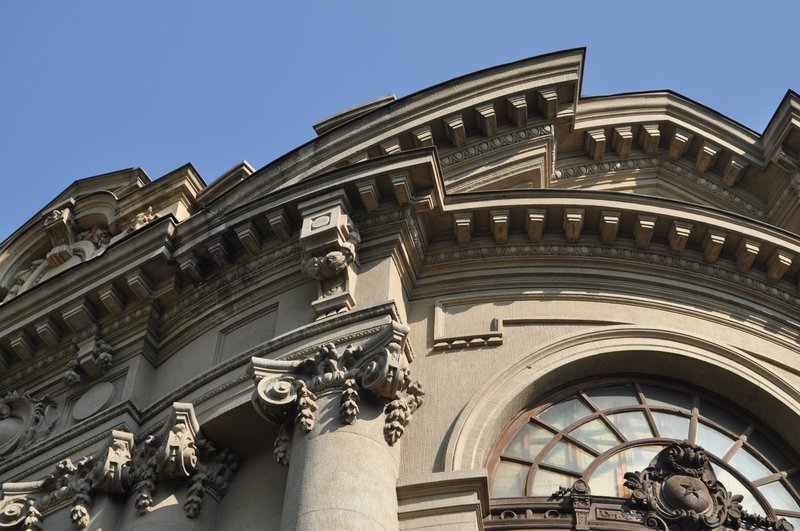
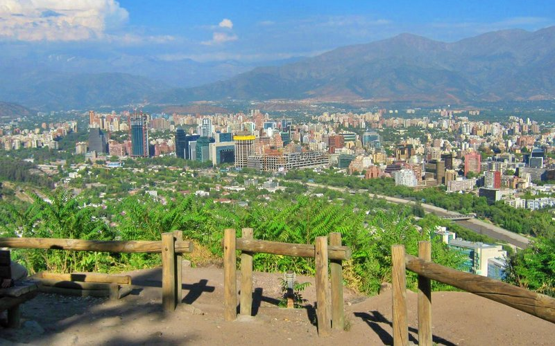
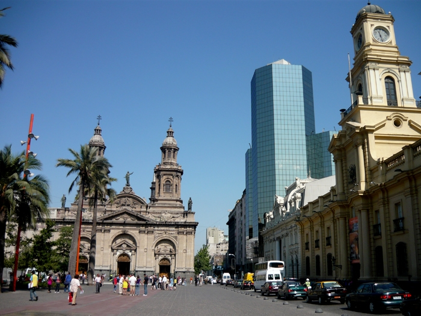
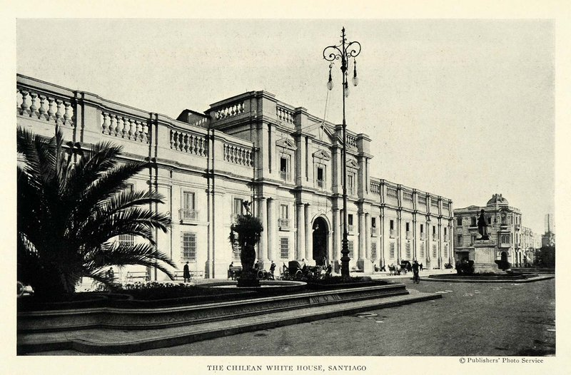
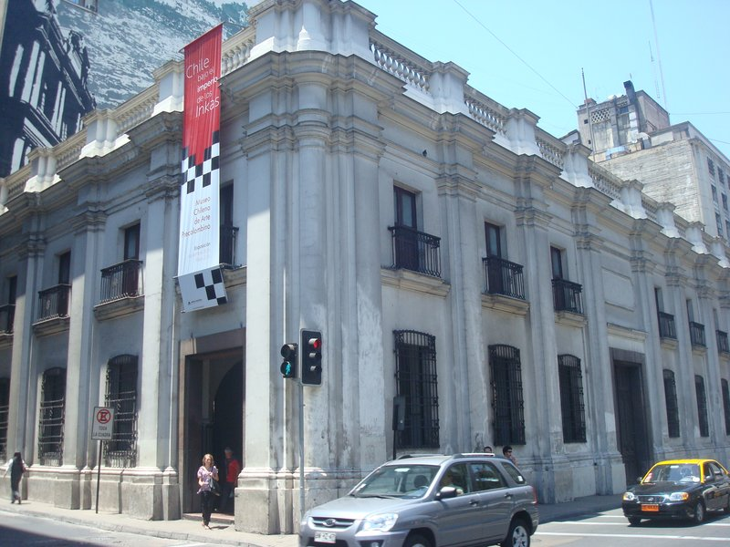
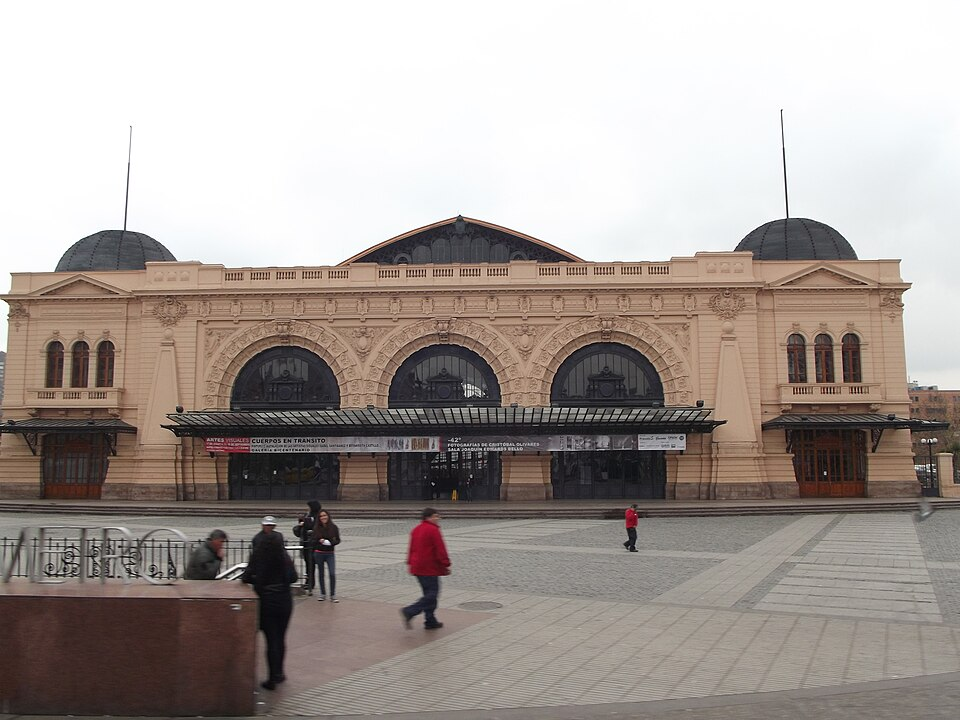

TRIP OVERVIEW
Day 1 – Cerro Santa Lucía · Bellas Artes · La Chascona
Day 2 – Cerro San Cristóbal · Plaza de Armas · La Moneda
Day 3 – Museo Precolombino · Estación Mapocho · Sky Costanera
Day 1
🏨 From Hotel: 🚶 5 min · 🚕 2 min → Cerro Santa Lucía
1.
Cerro Santa Lucía
↳ A forested urban hill rising from Lastarria, transformed by Intendant Benjamín Vicuña Mackenna in the 1870s from a barren rock into the city's first public park. Terraced gardens, Neo-Gothic fountains, and a hilltop belvedere with sweeping city views.
.jpg)
🚶 8 min · 🚕 3 min → Museo Nacional de Bellas Artes
2.
Museo Nacional de Bellas Artes
↳ Chile's national fine art museum in a stunning Beaux-Arts building designed for the 1910 centenary. The largest glazed dome in South America floods the central hall with light. Permanent collection spans Chilean painting from the 18th century alongside European works — all free.
🏛️ Tuesday - Sunday 10:00am - 6:30pm
🚫 Closed Monday
⏰ ~1 hr 30 min
🆓 Free

🚶 15 min · 🚕 5 min → La Chascona
3.
La Chascona
↳ The most visited of Pablo Neruda's three Chilean homes, named for the tangled hair of his muse Matilde Urrutia. This Bellavista labyrinth cascades down a hillside packed with Neruda's eccentric collections: ships' figureheads, butterfly specimens, European bar furniture, and the Nobel Prize medal.
🏛️ Tuesday - Sunday 10:00am - 6:00pm
🚫 Closed Monday
⏰ ~1 hr 30 min

🚶 20 min · 🚕 7 min → hotel
Day 2
🏨 From Hotel: 🚶 12 min · 🚕 5 min → Parque Metropolitano
1.
Cerro San Cristóbal
↳ One of the great urban parks of Latin America — Cerro San Cristóbal rises to 880 m with panoramic views across the city to the snow-capped Andes. Ride the 1925 funicular to the summit Virgin Mary statue then glide back down on the cable car over Bellavista rooftops. Parque Metropolitano spans 722 hectares.
🏛️ Monday 1:00pm - 6:45pm · Tuesday - Sunday 10:00am - 6:45pm
⏰ ~2 hr 30 min

🚕 20 min → Plaza de Armas
2.
Plaza de Armas
↳ The founding square laid out in 1541 by Pedro de Valdivia — the original Spanish colonial grid radiates from here. Flanked by the Metropolitan Cathedral, the Central Post Office, and the former Royal Court housing the National Historical Museum. Busy at every hour with chess players and street performers.

🚶 5 min · 🚕 2 min → La Moneda
3.
La Moneda
↳ Chile's seat of government — a neoclassical masterpiece by Joaquín Toesca completed in 1805, originally the colonial mint. Bombed by the Air Force during the 1973 coup. Visitors walk the exterior courtyards and the underground Plaza de la Ciudadanía which hosts rotating exhibitions.
🏛️ Monday - Friday 9:00am - 5:00pm
🚫 Closed Saturday & Sunday
⏰ ~45 min
🆓 Free

🚶 20 min · 🚕 8 min → hotel
Day 3
🏨 From Hotel: 🚶 20 min · 🚕 8 min → Museo Precolombino
1.
Museo Precolombino
↳ One of the finest pre-Columbian collections in the Americas, housed in a restored 19th-century building originally built as the Royal Custom House. Three floors of ceramics, textiles, goldwork, and sculpture from Mesoamerica, the Andes, and the Southern Cone — the Andean and Amazonian galleries are exceptional.
🏛️ Tuesday - Sunday 10:00am - 6:00pm
🚫 Closed Monday
⏰ ~1 hr 30 min

🚶 5 min · 🚕 2 min → Estación Mapocho
2.
Estación Mapocho
↳ Built in 1912 by architect Emilio Jecquier — the same architect as the Bellas Artes museum — this iron-and-glass station served passengers until 1987. Today one of Chile's finest cultural venues: its soaring vaulted interior flooded with light through ornate iron trusses is unmissable even without an event on.

🚕 20 min → Sky Costanera
3.
Sky Costanera
↳ Latin America's tallest building — the 300 m Gran Torre — opens its 61st and 62nd floor observation decks to the public. On a clear day the 360-degree view stretches from the Pacific coast 100 km west to the Aconcagua massif in the Andes with the full sweep of the city below.
🏛️ Daily 10:00am - 9:00pm
⏰ ~1 hr 30 min
.jpg)
🚶 35 min · 🚕 20 min → hotel
🗓️ Weekly Closures
Museums · Closed Monday
📅 Tours
Viator
↳ The highest-rated walking tour in the city — covers the historic centre and the history of Chile from colony to republic with a passionate local guide.
🕐 9:00am · ⏳ 3 hrs · 👥 15 max
🚕 8 min
↳ A 3-hour walk through the colonial and republican layers of the historic centre — markets, churches, and stories locals don't put on signs.
🕐 9:00am · ⏳ 3 hrs · 👥 15 max
🚕 8 min
GetYourGuide
↳ Full-day excursion combining the UNESCO World Heritage port city of Valparaíso with Viña del Mar beaches and a scenic drive through the Casablanca Valley.
🕐 8:00am · ⏳ 10 hrs · 👥 15 max
🚕 8 min
↳ Small-group 3-hour walk through the colonial core — Plaza de Armas, Mercado Central, and the architecture of the historic centre with a knowledgeable local guide.
🕐 10:00am · ⏳ 3 hrs · 👥 12 max
🚕 8 min
↳ Full-day Andes canyon excursion to the turquoise Embalse El Yeso at 2500 m with a traditional Chilean lunch en route through the high cordillera.
🕐 8:00am · ⏳ 10 hrs · 👥 15 max
🚕 8 min
TripAdvisor
↳ Three-hour colonial quarter walk with a local historian guide — one of the highest-rated walking tours in the city on TripAdvisor.
🕐 10:00am · ⏳ 3 hrs · 👥 15 max
🚕 8 min
☕ Cappuccino
Colmado Coffee & Bar · 4.7⭐ · 800+ reviews
🏛️ Monday - Friday 9:00am - 9:00pm · Saturday - Sunday 10:00am - 9:00pm
🚶 2 min · 🚕 1 min
3841 Coffee Roasters · 4.7⭐ · 600+ reviews
🏛️ Monday - Friday 8:00am - 7:00pm · Saturday - Sunday 9:00am - 7:00pm
🚶 3 min · 🚕 1 min
R3 Coffee · 4.6⭐ · 400+ reviews
🏛️ Monday - Saturday 8:00am - 6:00pm
🚫 Closed Sunday
🚶 8 min · 🚕 3 min
Café del Museo · 4.4⭐ · 300+ reviews
🏛️ Tuesday - Sunday 10:00am - 6:00pm
🚫 Closed Monday
🚶 8 min · 🚕 3 min
Castillo Forestal Café · 4.5⭐ · 500+ reviews
🫕 Restaurants Near Hotel
The Singular Restaurant · 4.4⭐ · 200+ reviews
↳ Hotel restaurant; French-inspired Chilean menu with guanaco and canelones.
🏛️ Daily 7:30am - 10:30pm
🏨 In the hotel · Merced 294 · Lastarria
Liguria · 4.5⭐ · 800+ reviews
↳ Classic Lastarria bistro; lamb shank, carne mechada, and excellent pisco sours.
🏛️ Monday - Saturday 12:00pm - 12:30am
🚫 Closed Sunday
🚶 1 min · 🚕 1 min
Bocanáriz · 4.4⭐ · 400+ reviews
↳ Top wine bar; 340+ Chilean labels and elevated small plates with merkén.
🏛️ Monday - Thursday 12:00pm - 12:00am · Friday - Saturday 12:00pm - 12:30am
🚫 Closed Sunday
🚶 3 min · 🚕 1 min
Chipe Libre · 4.5⭐ · 350+ reviews
↳ Lastarria pisco bar; sours, flights, and elevated Chilean small plates.
🏛️ Monday - Saturday 12:30pm - 12:30am
🚫 Closed Sunday
🚶 3 min · 🚕 1 min
Ambrosia Bistro · 4.5⭐ · 400+ reviews
↳ Refined Chilean bistro; seasonal tasting menus in a Lastarria garden setting.
🏛️ Monday - Saturday 1:00pm - 11:00pm
🚫 Closed Sunday
🚶 5 min · 🚕 2 min
Castillo Forestal · 4.4⭐ · 300+ reviews
↳ French brasserie in a château in Parque Forestal; onion soup and terrace views.
🏛️ Daily 12:00pm - 10:00pm
🚶 10 min · 🚕 4 min
🍽️ Downtown Restaurants
Salvador Cocina y Café · 4.6⭐ · 500+ reviews
↳ Hidden lunch spot; daily changing inventive Chilean menu. Fills fast at midday.
🏛️ Monday - Friday 12:00pm - 4:00pm
🚫 Closed Saturday & Sunday
Confitería Torres · 4.4⭐ · 600+ reviews
↳ Since 1879; terremoto cocktail was invented here. Time-capsule atmosphere.
🏛️ Monday - Saturday 9:00am - 10:00pm · Sunday 10:00am - 7:00pm
Fuente Alemana · 4.5⭐ · 700+ reviews
↳ Iconic diner; the definitive lomito — slow-cooked pork, avocado, and tomato.
🏛️ Monday - Saturday 11:00am - 10:00pm
🚫 Closed Sunday
Peumayén Ancestral Food · 4.7⭐ · 300+ reviews
↳ Indigenous tasting menu; Mapuche and Aymara traditions; piñones and huacatay.
🏛️ Tuesday - Saturday 7:00pm - 11:00pm
🚫 Closed Sunday & Monday
El Hoyo · 4.4⭐ · 500+ reviews
↳ No-frills classic since 1912; pork specialties, cazuela, and pastel de choclo.
🏛️ Monday - Saturday 12:00pm - 5:00pm
🚫 Closed Sunday
🍮 Local Tastes
Empanada de pino
↳ Chile's national snack — a half-moon pastry filled with ground beef, onion, olives, hard-boiled egg, and raisins. Best from a neighbourhood bakery or fuente de soda.
Pisco Sour
↳ Chile's national cocktail — pisco, fresh lime, simple syrup, and egg white. Silkier and less citric than the Peruvian version.
📍 Chipe Libre · Liguria
Cazuela
↳ The classic Chilean stew — slow-cooked broth of chicken or beef with potato, corn on the cob, squash, and rice. Served as a complete meal at any traditional picada.
Completo
↳ Chile's hot dog — buried under mashed avocado, sauerkraut, tomato, and mayonnaise. Best from a street stall or fuente de soda.
Mote con huesillos
↳ The unofficial drink of Chilean summer — hulled wheat in a sweet syrup of dried peaches. Sold by street vendors on Cerro San Cristóbal and across the city centre.
🎭 Shows, Performances & Concerts
Teatro Municipal de Santiago
↳ The grandest stage in the city since 1857 — opera, ballet, and symphonic concerts from the Orquesta Filarmónica year-round.
🎟️ municipal.cl
🚕 8 min
Centro Gabriela Mistral
↳ Modern cultural centre on the Alameda — theatre, dance, music, and visual art from Chilean and international artists. Check the agenda online.
🎟️ gam.cl
🚕 8 min
🚌 Getting Around
🚆 Train Stations Near Hotel
🚊 Estación Central
↳ The main intercity and regional rail hub — all EFE national rail and Metrotren services depart from here. The 1897 iron-and-glass structure is worth seeing in its own right.
🚶 40 min · 🚕 20 min
⛲️ Day Trips by Train
Rancagua · 1 hr 10 min
↳ Gateway to the Rapel wine valley and O'Higgins region — scenic ride through the agricultural heartland south of the capital. Metrotren commuter service runs frequently throughout the day.
🎫 book at: Omio
⭐ Michelin Restaurants
No Michelin Guide is published for Santiago.
❗️ Heads Up
❗️ La Chascona — Closed Monday; reserve tickets online
↳ La Chascona is closed Monday. Timed-entry tickets must be reserved in advance to avoid weekend queues.
Workaround: Visit Tuesday–Sunday and book at fundacionneruda.org before your trip.
❗️ Cerro San Cristóbal — Funicular queues peak mid-morning
↳ The Parque Metropolitano funicular gets its longest queues between 10:00am and 1:00pm on weekends.
Workaround: Arrive at 10:00am opening or after 3:00pm to cut wait time significantly.
❗️ Sky Costanera — Timed-entry sells out; buy in advance
↳ Sky Costanera sells timed-entry tickets online. Friday and Saturday evening slots sell out days in advance.
Workaround: Reserve at skycostanera.cl as soon as your dates are set — evening slots go first.